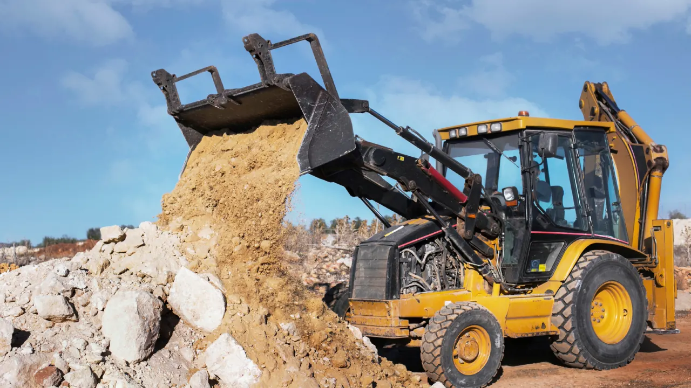

Grading & Site Leveling in Baton Rouge, LA
Big Easy Land Clearing grades and levels lots across Baton Rouge for new construction pads, commercial sites, and low spots that hold water after rain. Fall gets cut away from structures, high ground fills low ground, and the site is left ready for concrete or landscaping. Estimates are free, fast, and accurate: 504-517-0012.
A builder needs a flat, dry pad before the framing crew shows up. A commercial lot needs a level footprint before paving starts. A yard has held water in the same corner since the last hard rain. Whatever the ground looks like now, we grade it into something you can build on.
Sound familiar?
When Does a Baton Rouge Lot Need Grading?
New construction pads
Builders need a flat, compacted, well-drained pad before the foundation crew shows up, and Baton Rouge timelines don't leave room to wait.
Commercial corridor sites
Retail and office lots along Baton Rouge's commercial corridors need a level pad and working drainage before paving or building starts.
Low spots that hold water
Louisiana's wet, heavy ground holds standing water in low spots after a hard rain. Regrading moves the high ground to fill the low and gets water moving again.
Cleared pine ground
A pine stand cleared for a new lot leaves uneven ground and stump holes behind. Grading levels it out before anything gets built.
How Do We Grade a Baton Rouge Lot?
Baton Rouge lots tend to run bigger than what we see close to New Orleans. Builders working the outskirts of town, and crews working commercial corridors along the interstate, are often grading acreage instead of a quarter-acre yard. That changes the job. More ground means more equipment time, and it means we spend longer walking the site before we ever move dirt, checking where water already sits, where the highest and lowest points are, and where the pad or building footprint actually needs to land.
Louisiana ground doesn't drain like ground further north. Heavy clay and a high water table mean rain sits instead of soaking in, and a lot that looks flat can still pond in two or three spots after a storm. Before we grade anything, we walk the property and figure out where the water wants to go on its own, then we cut fall away from where the structure or pad will sit. That fall has to survive the next hard rain, not just look right on a dry day, so we build in enough slope that water actually moves off the pad and away from the foundation instead of pooling against it.
A lot of the grading work in this area follows land clearing. Baton Rouge and the parishes around it still carry a good amount of pine, and once a stand comes down the ground underneath it is rarely flat. Stump holes, root mounds, and low pockets where trees used to stand all need to get leveled before a pad, driveway, or building footprint can go in. We handle that as one job: clear the pines, grind or remove what's left, then grade the ground so it's actually buildable.
Builder timelines matter here too. A framing crew or a paving crew scheduled for a specific week doesn't have room for a pad that's still soft or still holding water. We work around those dates, not the other way around, and we compact as we go so the ground is ready to load when the next crew shows up. For sites along the busier corridors, that same logic applies to parking areas and building pads: level, compacted, and draining the right direction before anyone pours concrete.
Every grading job gets walked in person before we quote it. Ground that looks similar on a map can behave completely differently once we're standing on it, and the estimate reflects what we actually find, not a guess from the road.
Straight answers
Grading & Site Leveling FAQs
What does grading and site leveling include in Baton Rouge? +
Do you grade land after clearing it? +
Do you handle commercial sites as well as residential lots? +

Call 504-517-0012 for a Free Estimate
One crew, the right equipment, and a real number up front.
Free, fast, and accurate
Get Your Free Estimate
Call us or send the form. Licensed and insured, backed by a 100% satisfaction guarantee.
504-517-0012- ✓ Free, fast, and accurate estimates
- ✓ Licensed and insured
- ✓ 100% satisfaction guarantee